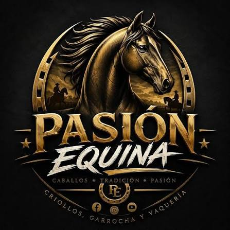

¿Qué es Pasión Equina?
Una página para quienes sentimos amor profundo por los caballos. Para nosotros son compañeros, amigos fieles y símbolo de libertad y fuerza.

Pasión EquinaUn punto de encuentro para quienes llevamos en la sangre la elegancia, la fuerza y la valentía del caballo de garrocha, y las fiestas de pueblo que le dan vida.

Una página para quienes sentimos amor profundo por los caballos. Para nosotros son compañeros, amigos fieles y símbolo de libertad y fuerza.
Compartir el conocimiento, el cuidado y el respeto hacia los caballos: cómo montarlos, cómo cuidarlos, su historia y las razas del mundo.
Filtra por la cualidad que más las distingue.
Origen: Arabia
Famoso por su resistencia en largas distancias.
Es una de las razas más antiguas. Cabeza fina, cola alta y mucha energía.
Origen: España
Porte elegante y paso brillante.
Muy usado en exhibición y doma clásica por su nobleza y cuello arqueado.
Origen: Estados Unidos
Imbatible en distancias cortas.
Su nombre viene de las carreras de un cuarto de milla. Es fuerte y muy ágil.
Origen: Suramérica
Rústico, fuerte y muy adaptable al trabajo de campo.
Es compañero del vaquero en la llanura y del trabajo ganadero.
No hay razas para este filtro.